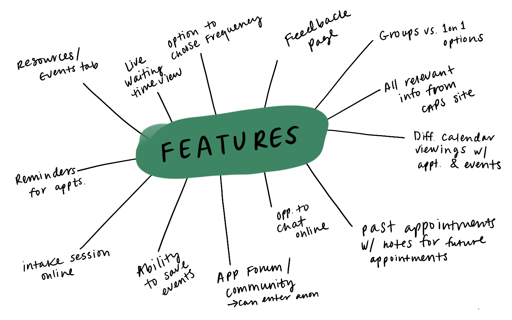
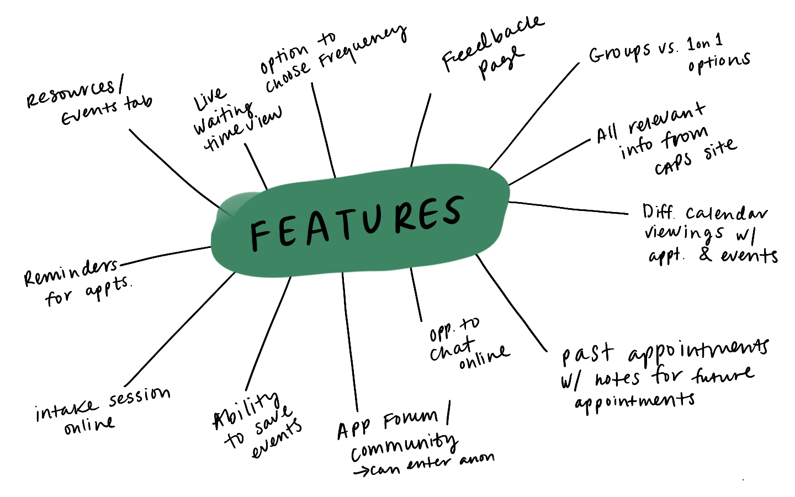

CAPS —
At my university, we have an on-campus mental health services for students called CAPS (Counseling And Psychological Services). CAPS is advertised to be available 24 hours a day via telephones and appointments. Though appointments are needed for consultations, issues that seek immediate attention have priority and can be attended to without a scheduled appointment.
Surveying Students —
Though CAPS is a well-known resources on campus, help is often limited and consultations require long waits. A friend of mine who recently seeked help from CAPS had to wait approximately a month to be seen by a school certified psychologist. To better gauge how UCSB students feel about their services and other on-campus resources for mental health, I created a short 3 questions survey for people to answer. My sample consists of 48 anonymous UCSB students from a Free & For Sale Facebook group—a group of which you need a UCSB email to join.
After conducting a survey, I was able to get a better understanding of how some students feel about the mental health services on-campus (see pie charts below). Out of 48 students, 66% felt discouraged from attending CAPS due to long waits and other reasons, and only 14% thought the services were easily accessible.
Conversations around CAPS —
To gain a better understanding of how and why UCSB students use CAPS, I began researching on the good ol' Google to see if there are any threads or forums. Then voila! I found the UC Santa Barara Reddit page. To my surprise, there were many useful conversations around why students go to CAPS or why students should go to CAPS (for example, already included in tuition so technically "free" therefore there's not much to lose). The majority of the comments around CAPS were positive, mentioning that the services were extremely helpful and the counselors were trained to ask the right questions to get you talking. However, I also saw some repeated struggles students went through:
- Long waits, when scheduling an appointment and when in the waiting room.
- Counselor's/Peer Advisor's Lack of effective note-taking strategy for patients.
- Students' lack of knowledge about the service. Do they accept walk-ins? How do I make an appointment?
Storyboard —
After conducting a survey and researching the on-going conversations around CAPS, I created a storyboard to get a better understanding of users needs in real context.
Brainstorming Features —


- Options to chat & call, and complete the initial intake session/questionnaire
- Instead of going into the on-campus office to do all the mentioned tasks, users could do all these tasks at the comfort of their home without having leave the house and/or interact with anyone.
- Section/tab that provides notes on history of previous appointments
- Having notes and history of appointments accessible on the app provide a good way for both the students and counselors/peer advisors to keep track of the sessions, and refer to older notes/comments.
- Resources and events tab for ongoing events and free giveaways on-campus (for example, free pizza during Finals week, free headshots for LinkedIn, free scantrons, etc)
- Having all the free resources and school funded activities gathered in one place is a good tactic to attract students to the app - giving them the exposure they wouldn't otherwise get.
Sketches —
After analyzing the information I've gathered, I started sketching out some ideas using paper and a pencil ✏️
Style Guide —
UC Santa Barbara has a wide range of colors in their main color palette. This was one of the suggested palettes called “Cool”. I chose this palette because the colors blue and green produce therapeutic and calming effects - which I think are fitting for the purpose of this mobile app.
Mid Fidelity Mocks —
After brainstorming features and sketching out my initial ideas, I created lowfi mocks to better visualize the product.
Start to Finish —
Sneak peek 👀—
This project is a work in progress. Here's a quick prototype of my current highfi mocks. Stay tuned for more iterations!